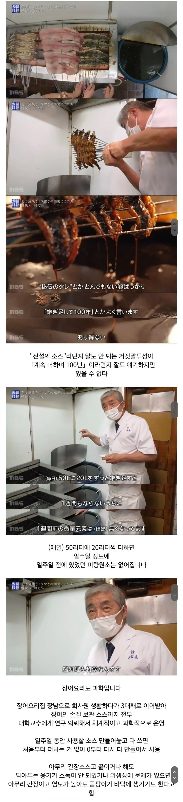

장어구이 장인이 말하는 비법소스
댓글
이게 맞지
족발 오래된 씨육수 써봤는데 차원이 달라 병 걸림
유산균처럼 발효균이 주는 맛도 다르고 조금 익혔는데 야들야들 해지는것도 다름
만석닭강정은 있어도 반도체 족발은 없는 이유를 알겠음
사장님들이 사업자등록증 가게문서 걸고 공공위생앞에서 외줄타기 하는 이유가 있더라
그거 옛날에 뉴스에서 성분검사 돌려서 박살난지가 언재인대
박살난건 잊혀진 그 뉴스고 실제 쌩쌩히 살아 영업중인건 씨육수 족발집들임
구구족같은 최신 프차 창업문의 해봐라 안물어봐도 씨육수 준다함
씨육수 족발집 추천좀
가게마다 오늘삶은거 나오기 전이라 어제남은거 팔거나 어제 남은게 많아서 그냥 나가면 잡내나고 점바점임
브랜드를 말하는거라면 너도 알고있는 가족 더족이 제일이고
뭔가 새로운 대답을 기대했다면 족발의 장인
가장 맛있는족발은 동네마다 친근 푸근하게 있어서 별거 아니어 보일수있고 말해도 무슨소릴 하는지 잘 안 와닿을텐데 거의 카르텔내지 혈맹임
일반 프차 매뉴얼을 초월한 내부에 반드시 지켜야할 율법이 있음
그정도야...!? 맛있겠다..... 생각해보니까 오래전에 가족 갔을때 아주 맛있게 먹었던 기억이 남
그정도 아냐 그냥 다들 쉽게 알고 먹는 정도야
근데 그게 무서워
무슨 말인지 알 것 같음ㅋㅋㅋ 족발 안먹은지 정말 오래됐는데 오늘 한번....
가장족발 다 포장된거 쓰지 않나요?
생족써요
위생어쩌구해도 나도 걍 씨육수 제대로 쓰는 족발 먹음
ㅋㅋㅋㅋㅋㅋㅋㅋㅋ 많이 드세요
애초에 그 씨육수라는 거 자체가 허상인 건 과학적으로 입증 됐음 걍 기분빨임
ㄹㅇ 다시다 msg차원이달라충 박멸된줄알앗더만
어디서또 씨육수충이튀어나오네 ㅋㅋ
근데 이렇게 말하면 그렇지만 그 기분빨을 이기는게 쉽지않음
플라시보효과란게 이렇게 무섭다
반대로 씨육수같은거 안쓰는데 저희 씨육수씁니다 하면 먹는새끼들도 다맛있게 먹는다는거임
다 원효대사 해골물이지 뭐
근데 진짜 오래된거에서 오는 뭔가 있는거같음
나 아는 횟집도 장소이전하고 초장맛이 달라짐ㅋㅋ
월세 높아서 원재료 싼거로 바꾼거임 ㅎㅎ
테세우스의 소스
근데 일주일만에 테세우스의 배 되는거면 역설적으로 그렇게해도 문제는 없다는거 아니냐ㅋㅋ
맨날 노포랍시고 존나 비위생적인 모습만 보다가 이러니 존나 깨끗해보임
씨육수 씨간장 이런건 옛날에 사용하던 마케팅인거지
얫날엔 마케팅을 안햇는데요….
그런곳들 다수십년 핸드폰이란게 없던시절부터…
핸드폰이 없던 시절부터 신문이나 TV를 통해 마케팅을 했지
노포 장어집이? ㅋㅋㅋㅋ
족발집
족발집이 씨육수팔이 많이하지않앗나
뭐 씨육수용 냄비를 수백만원에 판다던 헛소리 tv에서 듣고 그랬는디
족발 씨육수 그 썩은 물을 수백수천만원 받고 팔았는데요 ㅋㅋㅋㅋ
위생 쪽을 접어두면 중국집 기름 같은 경우도 마찬가지인게
가장 심플한 볶음밥 했을때 몇번 걸러 사용한 튀김 기름을 쓰는게 가장 맛있음
파기름을 뭐 따로 뽑고 라드를 쓰고 이런 것도 비교 불가 할 정도로 풍미가 차이 남
저게 진짜 장인이지
옳게 된 장인
이어지는 불의 의지
옳게된 운영
일본도 좀 위생 신경쓰기 시작하나보네
솔직히 노포음식점들 오래됬든 말든 존내 더러움
반도체 공장이구나